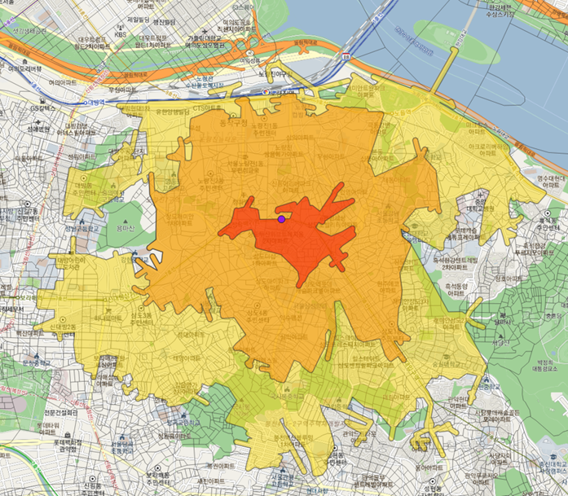
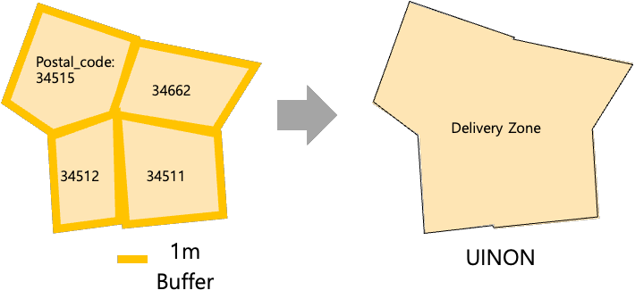
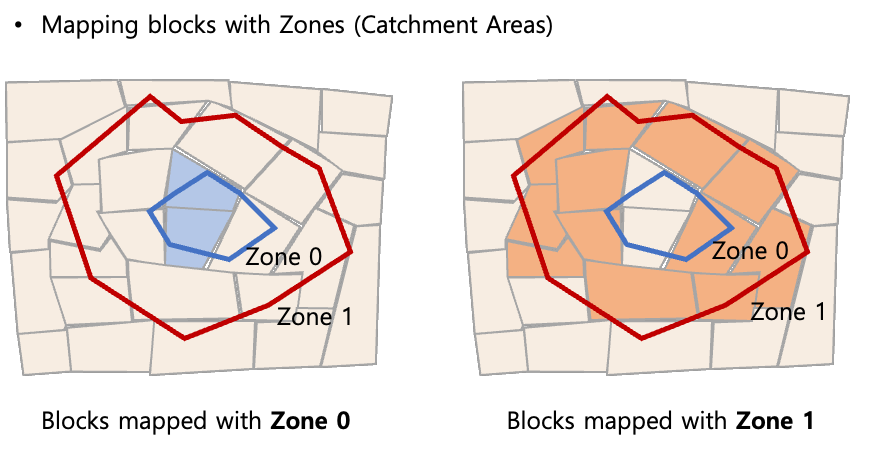
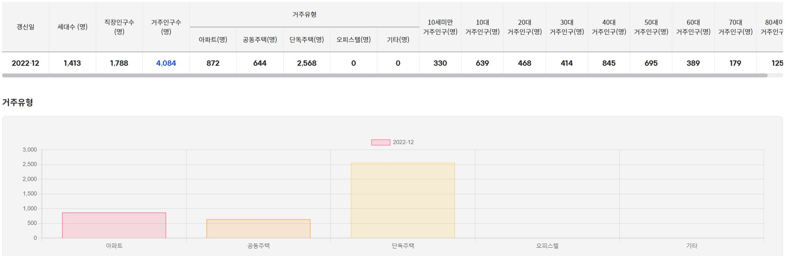

From store totals to local market context
A Korean hypermarket company with 240 stores needed a clearer view of the neighborhoods around each store. Its existing reporting focused on store totals and approximate delivery areas, leaving limited visibility into where customers lived and how local markets differed.
I led the analytical work for a web service that connected network-based catchments, delivery boundaries, neighborhood characteristics, and customer transactions. The service supported analysis by block, catchment area, and store, across daily, monthly, and yearly views.
My contribution
- Defined the analytical service. Planned features and analysis logic, worked with the business team, and coordinated analysts as the Analysis Project Leader.
- Designed the data foundation. Specified approximately 100 service tables and the processing and aggregation logic used by developers and the database specialist.
- Prepared recurring operations. Developed analytical code, tuned processing for runtime efficiency and more reliable reruns, and configured batch jobs and cron schedules.
I worked within a seven-person team: one project manager, two analysts, two developers, one database specialist, and one web designer.
Define the area before measuring the market
I created two complementary types of zones: street-network catchments to describe access to a store, and delivery zones based on the postal codes served by that store.
Walking catchments from the street network
- Locate each store. Clean and geocode store addresses, then retrieve the surrounding OpenStreetMap walking network with OSMnx.
- Find the reachable network. Use NetworkX to select connected nodes and edges within 5, 10, 20, 30, and 60 minutes, assuming a walking speed of 5 km/h. The service also accepts user-defined time or distance inputs.
- Create analysis polygons. Buffer and combine the reachable network, then subtract inner polygons to form non-overlapping rings.

Handling sparse road networks
In areas with a sparse retrieved network, I used a density-based rule to add a convex hull around reachable network points to the buffered geometry. This produced a usable analysis polygon where network buffers alone were fragmented.
The resulting boundary is a geometric approximation: the hull can include gaps between reachable streets. Network completeness and the buffer settings therefore affect the estimated catchment.
Delivery zones and a common block layer
I joined each store’s delivery postal codes to boundary polygons, applied a 1 m buffer, and dissolved them into a store-level delivery zone.

Both types of zones were mapped to OpenMate’s proprietary block polygons, which became the common unit for data aggregation. I excluded intersections covering 10% or less of a block and assigned blocks with multiple candidate zones to the zone with the largest overlap.

Describe the people and places around each store
I combined OpenMate spatial data and public datasets into four categories. Spatial joins mapped building and point data to blocks before aggregation to catchments and stores.
| Category | Measures |
|---|---|
| Demographic | Resident population by age and housing type; employment population. |
| Economic | Apartment and individual-house prices. |
| Commercial | Business density, openings, closures, and growth. |
| Transportation | Public transport access, including coverage based on bus-stop and subway-station buffers. |
For missing resident-population values, the analysis used a decision tree regressor with household and housing predictors, as well as averages from blocks within the same census tract. These estimates supported a more complete geographic dataset.

Connect market size with customer activity
The client’s existing penetration measure divided customer counts by household counts. I redesigned the measure around resident population and age groups, making the population basis explicit.
÷ resident population in that area and age group
For daily customer counts, I counted each customer once per date and calculated age at the transaction date. Online orders were assigned to blocks and catchments using each store’s customer delivery addresses.
- Sales and orders: account for cancellations when calculating net sales and net order counts.
- Customer and basket measures: calculate spending per customer and average order value.
- Product mix: summarize leading SKUs overall and within age groups.
- Channel views: support online, offline, integrated, and project-defined omnichannel analysis.
Service definition: “Omnichannel” identified customers who purchased both online and offline at the same store on the same day. This was a specific operational rule for this project.
Put store performance in context
I developed a grading approach using market characteristics and store performance indicators. Individual indicators were grouped into five grades using Jenks natural breaks, then combined with weights into a composite grade.
Stores in the same composite grade formed comparison groups. This provided an interpretable starting point for reviewing stores with comparable overall scores; a shared grade does not imply identical neighborhood or customer profiles.
Turn analytical logic into a recurring service
Analytical web service
Catchment generation, market profiles, customer penetration, channel analysis, and store comparison in one reporting framework.
Operational foundation
Service table designs, aggregation specifications, analytical batch code, and scheduled processing.
Handover materials
A logic manual, final report, and handover documentation for continued operation.
The project extended the client’s analytical view from store totals to geographic and customer detail. My contribution connected the analytical definitions with the table structures and recurring processing needed to operate the service.
Interpretation and limitations
Catchments depend on the available street network and a fixed walking-speed assumption. Sparse-network filling and dominant-overlap block assignment simplify boundaries. Population-based penetration also requires compatible geography, age groups, and reporting periods; delivery addresses do not necessarily establish residence.
These considerations matter when interpreting the service’s geographic comparisons. The project documentation describes delivery of the service, without a quantified sales uplift or runtime benchmark.